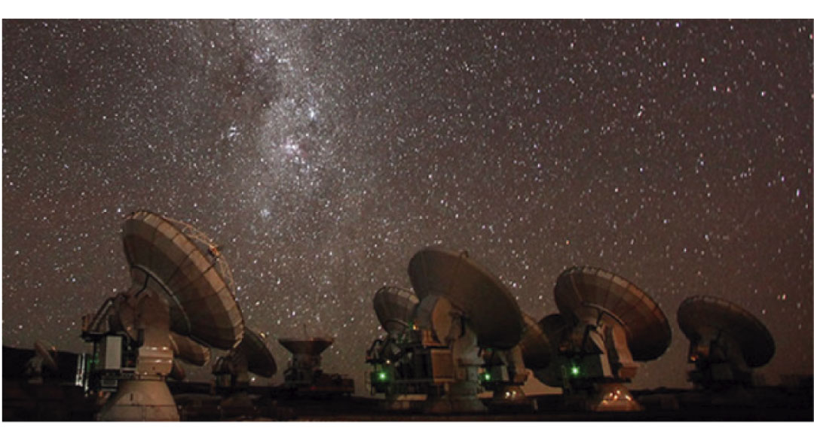

Los sistemas aislados representan un gran desafío para cumplir con las metas de descarbonización, debido a que no se encuentran conectados a la red y no pueden depender totalmente de las ERNC sin almacenamiento. Este tipo de sistemas está siendo abordado por distintas iniciativas que involucran el respaldo en base a hidrógeno verde, como alternativa sostenible a los respaldos en base a combustibles fósiles.
Para aumentar la costo-eficiencia de este tipo de proyectos, se suele destinar la energía renovable producida directamente como suministro para el sistema en sí, donde el superávit generado se destina a la electrólisis, con el objetivo de almacenar hidrógeno y que sea utilizado para producir energía cuando no haya sol ni viento.